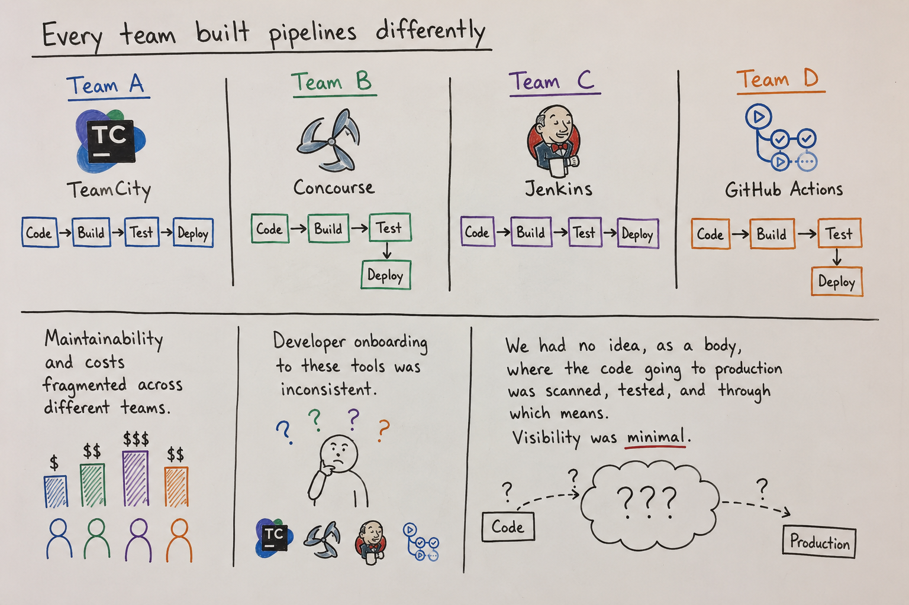

CI/CD Platform

Problem
5,000+ engineers. 52,000+ repositories. No standard way to ship code.
Every team built pipelines differently — TeamCity, Concourse, Jenkins, GitHub Actions. Maintenance and cost were fragmented across teams, and onboarding was inconsistent.
Nobody could say where code going to production was scanned or tested, or by what. Visibility was minimal.
Discovery
We interviewed engineering teams across the organization. Nearly every one followed the same core workflow:
- Install dependencies
- Build
- Run unit tests
- Run static analysis
- Deploy
We POC'd each candidate against that workflow. GitHub Actions was the clear winner.
Why GitHub Actions?
Pros
- Everyone's code already lived in GitHub
- Teams wouldn't need to leave GitHub
- GitHub-hosted runners out of the box
- Growing support for packages and workflows
- Secret management per repo
- Already paying for GitHub EMU; Actions came included
Challenges
- Immature enterprise feature set
- Required custom reusable workflows
- Runner infrastructure costs
- API rate limits
- Workflow architecture constraints
The First POC
I partnered on the first proof of concept, proving GitHub Actions could meet our enterprise delivery requirements end to end:
- Source checkout
- npm environment provisioning
- Dependency installation
- Unit testing
- Security scanning
- Docker image creation
- Artifact publishing
- Enterprise deployment
What We Built
I then owned the reusable components across the stack and the runner infrastructure.
Over the next few years that proof of concept became our internal CI/CD platform. A team effort throughout.
- Full onboarding documentation
- ARC runners
- Reusable workflows
- Meta pipeline
- Unit test uploads
- Security scanning
- Artifact management
- Standardized change request creation
- Attestation tracking
All of it funnels through one deployment platform at the end, onto managed Kubernetes.
Language support rollout order
- npm/JS
- Maven/Java
- Python
- Go
Impact
5,000+
engineers
52,000+
repositories
Lessons
What I'd Change
I'd build the reusable components before the meta pipeline, and cap the depth of reusable workflows so we didn't hit platform limits. I'd have written the documentation far sooner.
The meta pipeline was genuinely good once you were on it. Teams didn't maintain security findings in downstream packages or chase external dependency updates in their workflows — the platform did it for them.
Onboarding onto it was the problem. Users only see inputs at the top level, never the pipeline underneath. Those inputs map through a set of reusable workflows and actions we defined, and once you're reasoning about actions and filesystems across runners, that opacity costs you.
Tradeoffs
Standardization vs. flexibility: one opinionated pipeline bought maintainability and consistency at scale, and cost teams their edge cases. For those, we pushed teams to compose the reusable components into their own workflows rather than use the meta pipeline.
The rigidity still showed up as support load. Teams needed hands-on guidance to fit the framework, and that time came out of feature and platform work. We were reasoning about edge cases from inside a paved road, with limited room to accommodate deviations without undermining the model. We bent where we had to and held firm where we could.